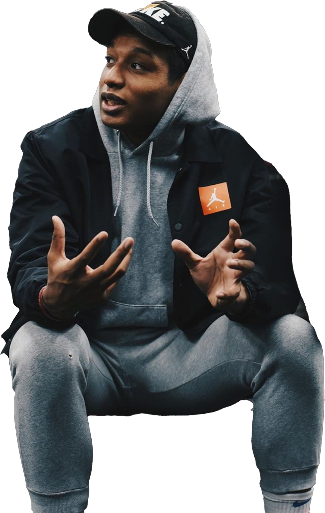

ゲストと向き合う対話を、映像でまるごと届ける。表情と間まで含めてのトークだから。
移動中も、練習の行き帰りも。耳だけで楽しめるかたちでも配信中。
選手、指導者、クリエイター。バスケを入り口に、それぞれの道を歩む人たちの人生を聞く。
【移籍直前】ついに八村塁にインタビュー！NBA Rising Star Invitationalで！
【最強のストリートボーラー1/2】YUKKEのバスケ人生。1on1最強の相手、Bリーグ挑戦の裏側などを初公開
【対談】なぜ日本でプロに？瀬川琉久のバスケキャリアとこれからEGOZARUから出すシグネチャーシューズについて！
Post Up Podcast は Red Bull のサポートを受けて制作しています。